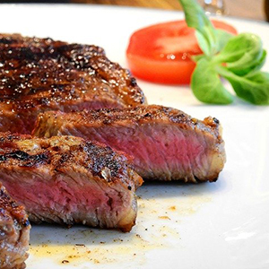

This casual sit-down Mexican spot in Craigin-Belmont looks kind of like an art gallery, with sculptures, paintings, and masks hanging all over. You’ll find white tablecloths on all the tables and tissue paper accents on the plates, but the overall atmosphere is low-key, and it works for a casual weeknight dinner or laidback date.
Immm Rice& Beyond
You’ve probably been to a few restaurants where you wanted to order pretty much everything on the menu. But unless you were really hungry, rich, or both, that likely wasn’t a feasible option. At Immm Rice & Beyond, it basically is - which is one reason we like this place so much.

Chicago Cut
Chicago Cut is the steakhouse you visit for a Power Meal. A Power Meal could mean a few things, including a corporate dinner, special occasion, or even a big Saturday night out because you haven’t had one in a while. And Chicago Cut is the king of Power Meals, because in a city full of fancy and expensive steakhouses, this is the most formal and expensive of the bunch. If you come expecting this, and are ready to spend on a serious meal, you’ll have a great time.
Get the New Book!
On Nom NOm just released a new book! Buy the book on Amazon, Google Play, and other places that fine books are sold.